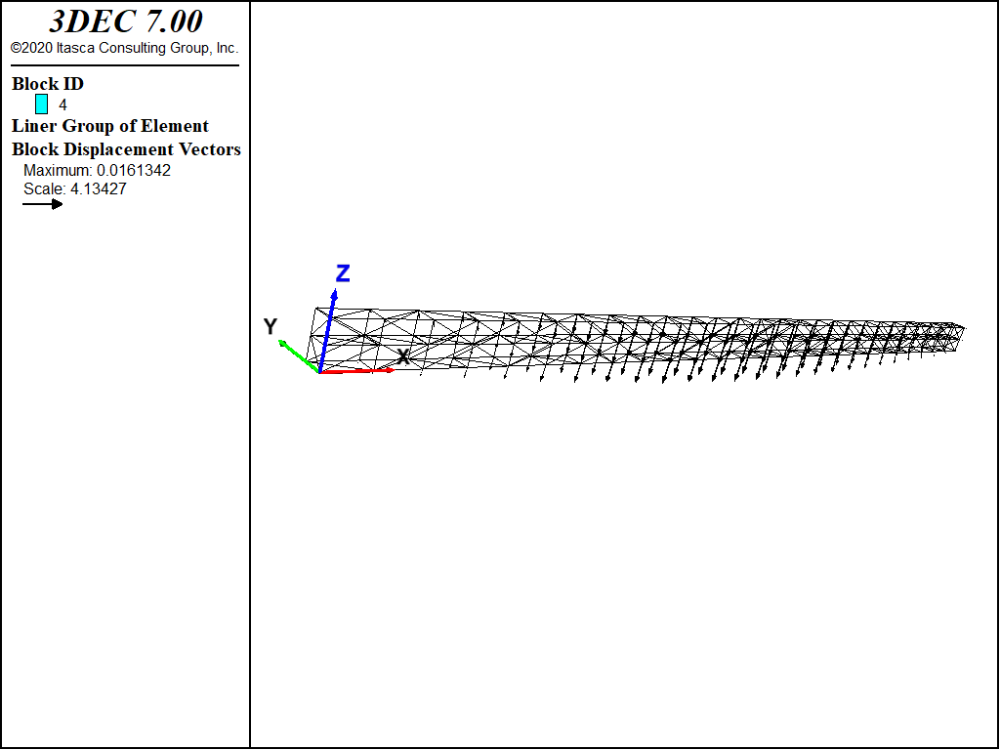
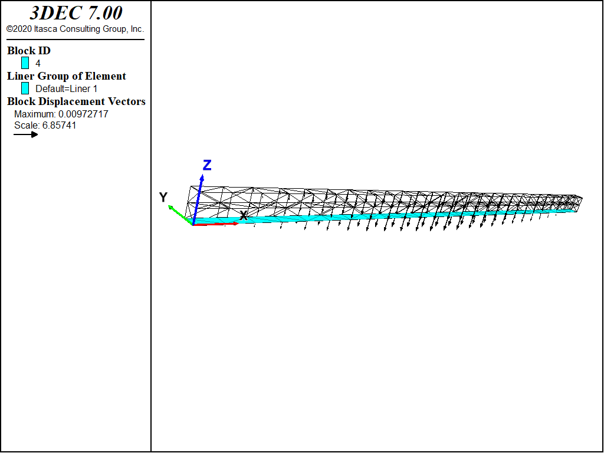
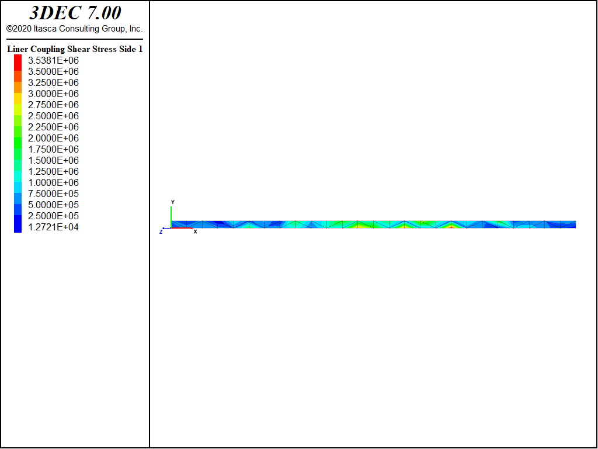
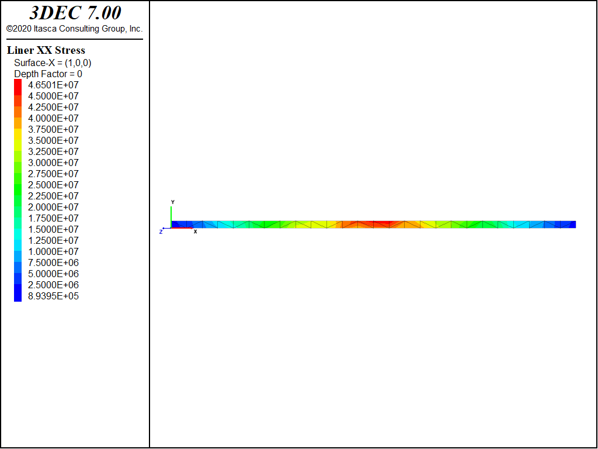

衬砌加筋梁
问题描述
注意
要在 3DEC 中查看该项目，请使用菜单命令 。选择 “BlockSel/ Liner/ ReinforcedBeam”，然后选择 “ReinforcedBeam.prj” 载入。所用的主数据文件（data file）显示在本示例末尾。其余数据文件可在该项目中找到。
一根简支木梁（\(E\) = 8.6 GPa，\(\nu\) = 0，长 2.5 m，截面 45 × 90 mm）在其中部施加 2000 N 的集中荷载。梁用 312 个 3DEC 网格单元建模。（注意，要获得正确的梁理论解需要更多网格单元。按当前建模方式系统偏刚；但对本示例而言足够。）3DEC 模型及位移场见 图 1（Figure 1）。
将厚 10 mm 的钢衬砌（\(E\) = 200 GPa，\(\nu\) = 0.3）附着到梁底部后重新运行该问题。通过将衬砌黏结强度设得很大，衬砌-梁接触面不允许发生滑移。（衬砌刚度依据 衬砌刚度公式（the liner stiffness equation）选取。）衬砌加筋梁的位移场见 图 2（Figure 2）。衬砌的存在使跨中最大挠度从 9.4 mm 减小到 5.4 mm。沿衬砌-梁接触面产生了剪应力（见 图 3（Figure 3）），衬砌外缘的最大拉应力 \(xx\) 约为 35 MPa（见 图 4（Figure 4））。衬砌中面的最大拉应力 \(xx\) 为 35 MPa。将衬砌黏结强度设为零后，衬砌-梁接触面允许发生滑移。接触面剪应力趋于零，位移场增大到几乎与无衬砌梁相同（见 图 5（Figure 5））。衬砌仍为组合系统提供一定刚度。


图 1：无衬砌木梁的位移场。


图 2：衬砌加筋木梁的位移场（衬砌-梁接触面无滑移）。


图 3：作用在衬砌上的剪应力（衬砌-梁接触面无滑移）。


图 4：衬砌外缘承担的 xx 向应力（衬砌-梁接触面无滑移）。

数据文件
ReinforcedBeam.dat
; 衬砌结构单元应用算例——衬砌加固梁
model new
model random 10000
model large-strain off
model title 'Bending of a liner'
; 创建网格几何形状
block create brick 0 2.5 0 45e-3 0 90e-3
; 进行切割，以便施加线荷载
block cut joint-set dip 90 dip-direction 90 or 1.25 0 0
; 进行切割，确保梁厚度方向划分两层网格单元
block cut joint-set or 0 0 45e-3
block join
block zone generate edgelength 0.1
; 本构模型和参数
block zone cmodel assign elastic
block zone property dens 2000 young 8.6e9 poisson 0
; 边界条件
block gridpoint apply velocity-x 0 range position-x 0 position-z 0
block gridpoint apply velocity-z 0 range position-x 0 position-z 0
block gridpoint apply velocity-z 0 range position-x 2.5 position-z 0
block gridpoint apply force-z -1000 range position-x=1.25 position-z=90e-3
block face group 'Bottom' range pos-z 0
model save 'Start'
; --- 无衬砌工况
model solve
model save 'Unlined'
; 有衬砌工况
model restore 'Start'
; 创建衬砌并指定参数
struct liner create by-block-face range group 'Bottom'
struct liner property isotropic=(200e9, 0.3) thickness=10e-3 ; 钢
struct liner property coupling-stiffness-normal=1.9e12 ...
coupling-stiffness-shear=1.9e12 ...
coupling-cohesion-shear=1e20 ...
coupling-yield-normal=1e20
struct mechanical damping combined-local
model solve
model save 'Lined-NoSlip'
; 降低衬砌抗剪强度
struct liner property coupling-cohesion-shear=0.0
model solve
model save 'Lined-Slip'
| 这些内容对您有帮助吗？… | FLAC3D © 2019, Itasca | 原文更新于 2020 年 10 月 8 日 |